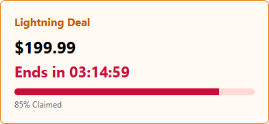
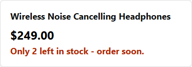
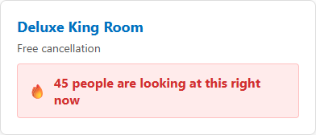
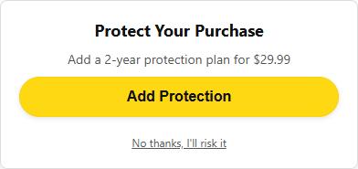
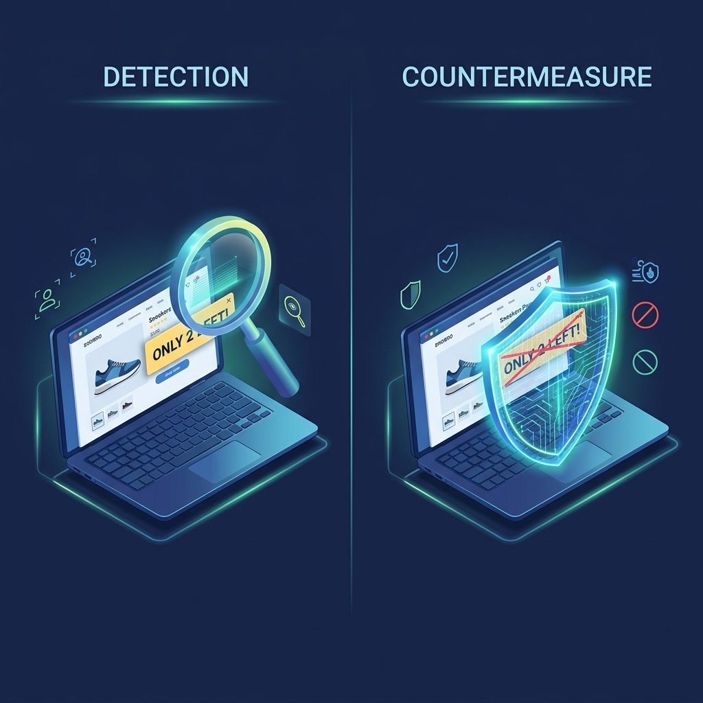
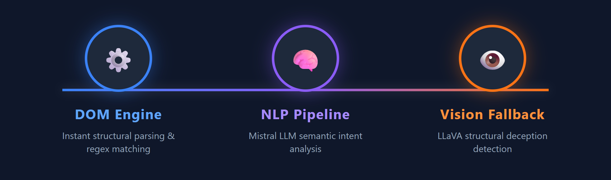
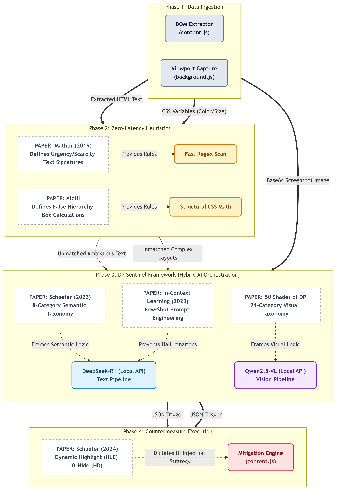

Copy the content below into your presentation software (PowerPoint, Keynote, Google Slides). Follow the visual instructions to add graphics.
Users are overwhelmed by manipulative UI tactics that cause:

Urgency (Countdown Timers)

Scarcity (Low Stock Warnings)

Social Proof (Herd Mentality)

Misdirection (Hidden Opt-Out)
Finding the trap. Scans the page’s DOM, CSS and visual cues to locate manipulative elements before the user interacts.
Disarming the trap. Modifies or masks the deceptive element, preserving the user’s intended action.

How DarkSight analyzes and identifies manipulative web elements in real-time:
Fast, immediate scanning of HTML structure and CSS classes. Catches obvious known patterns using regex and structural rules.
Local LLM (Mistral) analyzes the semantic intent of the text to understand context, bypassing simple keyword evasion.
Multimodal LLM (LLaVA) processes page screenshots to catch structural visual deceptions that text-analysis is blind to.

Our detection engine is strictly built upon validated, peer-reviewed academic research:
Paper: "Dark Patterns at Scale: Findings from a Crawl of 11K Shopping Websites"
How we used it: Provided the core taxonomy (Urgency, Scarcity, Social Proof) and formed the foundation for our Tier 1 Fast DOM Heuristic Engine.
Paper: "Using Large Language Models to Detect Deceptive Patterns"
How we used it: Governs our Tier 2 NLP Text Pipeline. We implemented their zero-shot and few-shot in-context learning methodologies using the local Mistral LLM to evaluate the semantic intent of text.
Papers: "AidUI: Toward Automated Recognition of Dark Patterns in UIs" & "50 Shades of Deceptive Patterns"
How we used it: Defines the baseline for visual deception (e.g. false hierarchies). Integrated into our Tier 3 Multimodal Vision Pipeline (LLaVA) to analyze screenshots for structural and color-based manipulations.
Implementation Scope: From this research, we adapted and implemented the Visual intervention strategies for our extension's user interface. Specifically, we integrated their most successful countermeasure: Highlight with Explanation (HL+E).
The underlying engine (Regex, LLM, or Vision) successfully flags a manipulative DOM element.
The extension dynamically injects the dp-highlight class into the element's CSS.
A distinct visual boundary (Highlight) is drawn around the element to catch the user's attention.
A hoverable dp-global-tooltip provides the Explanation, fulfilling the HL+E criteria.
Implementation Scope: From this research, we implemented the Text & DOM component of our detection pipeline. We adopted their Fast Heuristic Scan logic.
Rapidly extract text nodes from UI elements across the loaded web page.
Compare texts against pre-compiled heuristic patterns derived from Mathur's dataset.
Identify obvious dark patterns in milliseconds with near-zero latency.
Flag detected elements immediately; forward unmatched text to the LLM tier.
Implementation Scope: From this research, we implemented the Text (LLM) component of our detection pipeline. We adopted their Few-Shot Prompting methodology.
Receive complex text fragments that bypassed the Tier 1 regex engine.
Inject text into a Few-Shot template containing strict categorization rules.
The Ollama-hosted Mistral model evaluates the semantic intent in real-time.
Return a structured JSON decision (e.g., NORMAL or Misdirection).
Implementation Scope: From this research, we implemented the DOM & Visual Structure component. We adopted their mathematical logic for Structural Visual Analysis.
Identify sibling interactive elements (e.g., adjacent Accept/Decline buttons).
Extract computed styling properties: bounding box dimensions, background colors, text luminance.
Calculate the area ratio and contrast discrepancies between the sibling elements.
If the disparity exceeds the malicious threshold (e.g., > 1), flag as a False Hierarchy.
Implementation Scope: From this research, we implemented the Visual (Multimodal) component. We adopted their 21-category visual taxonomy for complex spatial deceptions.
The extension securely captures the visible browser tab viewport.
The 21 academic visual categories are bundled into the vision prompt.
The image is sent to the local multimodal AI for holistic spatial analysis.
If a screen-wide manipulation is found, a global page alert is triggered.
Implementation Scope: From this research, we implemented the System Architecture component. We adopted their overarching multi-tiered orchestration logic.
Content scripts (Mathur/AidUI) run instantly on page load to catch obvious threats.
Unmatched, complex texts are handed off via background.js to the Mistral AI.
Screenshots of the full viewport are analyzed by LLaVA for spatial anomalies.
Unified threat reports trigger Schaefer's visual countermeasures to protect the user.
| Academic Paper | Core Concept | Methodology & Implementation | Scope |
|---|---|---|---|
| Mathur et al. (2019) | Dark Pattern Text Corpus | Fast Heuristic Scan engine mapping prevalent manipulative strings via Regex. | Text / Regex |
| Schaefer (2023) | Visual Countermeasures | "Highlight with Explanation" (HL+E) alert UI module modifying the DOM layout. | Visual / UI |
| Academic Paper | Core Concept | Methodology & Implementation | Scope |
|---|---|---|---|
| In-Context Learning (2023) | GPT-3 Classification | Few-Shot prompt engineering explicitly classifying unmatched text chunks. | Mistral LLM |
| AidUI (2023) | Structural Analysis | CSS calculations for color contrast gaps and structural false hierarchies. | DOM / CSS |
| Academic Paper | Core Concept | Methodology & Implementation | Scope |
|---|---|---|---|
| 50 Shades of DP | Visual Taxonomy | 21-category spatial mapping for full viewport screenshots. | LLaVA Vision |
| DP Sentinel | Hybrid Architecture | Multi-tiered orchestration framework (Heuristics ➔ AI ➔ Mitigation). | System Layer |
| Paper & Description | What it does for Textual Detection | Methodology Followed | How it helps to detect |
|---|---|---|---|
|
Mathur et al. (2019) A large-scale crawl of 11K shopping sites defining common manipulative text patterns. |
Provides the core text taxonomy for Tier 1 scanning. | Fast Heuristic Scan: DOM text extraction and Regex pattern matching against predefined threat signatures. | Instantly detects prevalent strings like "Only 2 left" (Scarcity) or "Flash Sale" (Urgency) with zero latency, filtering out obvious patterns before needing AI. |
|
Schaefer (2023) Defines a strict 8-category taxonomy for deceptive UI patterns in online shopping. |
Acts as the semantic taxonomy framework for complex, ambiguous texts. | LLM Text Analysis: Processes unmatched text batches using local DeepSeek-R1 to evaluate underlying semantic intent. | Detects 8 core manipulation categories that basic regex misses (like disguised obstruction or nuanced misdirection) by understanding context rather than just keywords. |
|
In-Context Learning (2023) Research on improving LLM reliability through structured examples inside prompts. |
Structures the instructions and bounds given to the DeepSeek-R1 model. | Few-Shot Prompt Engineering: Injecting strict academic definitions and positive/negative training examples into the prompt payload. | Prevents zero-shot AI hallucinations, enforces strict categorization (e.g. telling a real deal from a fake discount), and drastically increases the NLP pipeline's overall reasoning accuracy. |
| Paper & Description | What it does for Structural Detection | Methodology Followed | How it helps to detect |
|---|---|---|---|
|
AidUI (2023) Research on automated recognition of dark patterns based on structural DOM layouts and CSS styling. |
Provides the mathematical and structural logic for identifying False Hierarchies in the DOM Engine. | Structural Analysis & CSS Calculations: Traverses the DOM to find sibling interactive elements (Accept/Decline buttons) and computes their bounding box area ratios, background color luminance, and WCAG contrast gaps. | Mathematically flags "Attention Distraction" and "Misdirection" instantly. By objectively measuring size disparities (e.g. Area > 1.0 threshold) and color differences, it detects manipulation without needing subjective AI interpretation. |
| Paper & Description | What it does for Visual Detection | Methodology Followed | How it helps to detect |
|---|---|---|---|
|
50 Shades of DP A comprehensive study establishing a vast 21-category taxonomy of deceptive visual layouts. |
Provides the baseline visual taxonomy for the Tier 3 Multimodal Vision Pipeline. | Multimodal Vision Taxonomy: This 21-category spatial mapping is injected into the prompt alongside a full viewport screenshot and sent to the local LLaVA AI. | Detects context-heavy, full-screen layout manipulations (e.g. Roach Motel, Hidden Costs, Disguised Ads) from a raw image that text/DOM-only analysis is completely blind to. |
|
DP Sentinel Research proposing a hybrid framework architecture for detecting deceptive patterns securely. |
Dictates the overarching multi-tiered orchestration logic of the extension. | Hybrid Architecture Framework: Orchestrates the flow from lightweight DOM Heuristics (Tier 1) ➔ Text AI (Tier 2) ➔ Multimodal Vision (Tier 3). | Solves the critical issue of LLM latency. By relying on this hybrid flow, the tool filters out simple threats instantly, ensuring the heavy LLaVA vision model only processes the UI when absolutely necessary, maintaining browsing speed. |
A holistic view of how DarkSight orchestrates its detection pipelines. Each tier is directly governed by specific academic theories, ensuring rigorous, real-time protection against dark patterns.

Results extracted directly from the Colab testing environment, proving the Tier 3 Multimodal Vision Pipeline successfully categorizes spatial UI patterns from raw pixels using the 50 Shades of DP taxonomy.
| Test Image (AidUI) | Detected Category | AI Vision Explanation |
|---|---|---|
| 1947.jpg | Gamification | "The image suggests a repetitive task with a score system and a 'Complete' button, indicating that users are required to perform tasks repeatedly for rewards." |
| 1101.jpg | Price Comparison Prevention | "The image shows a screen with no visible prices for comparison. This suggests that users cannot see and compare different options based on price, which is a deceptive pattern." |
| 119.jpg | Disguised Ad | "The image contains an advertisement for Plato's Closet that is visually similar to a call-to-action button, potentially misleading users." |
| 1373.jpg | NORMAL | "The image does not exhibit any deceptive patterns... All options are clearly visible and accessible without hidden links, ensuring a smooth user experience." |